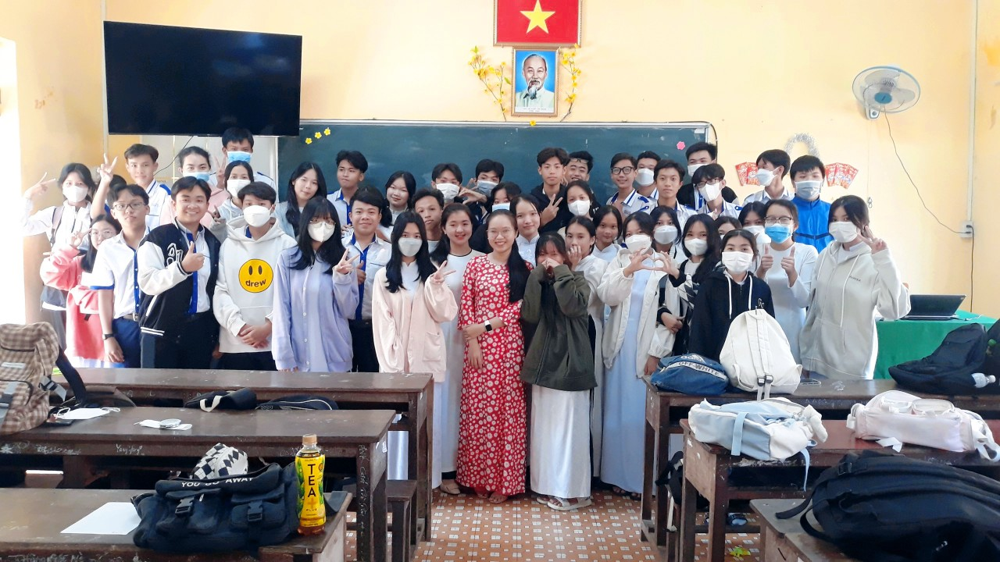
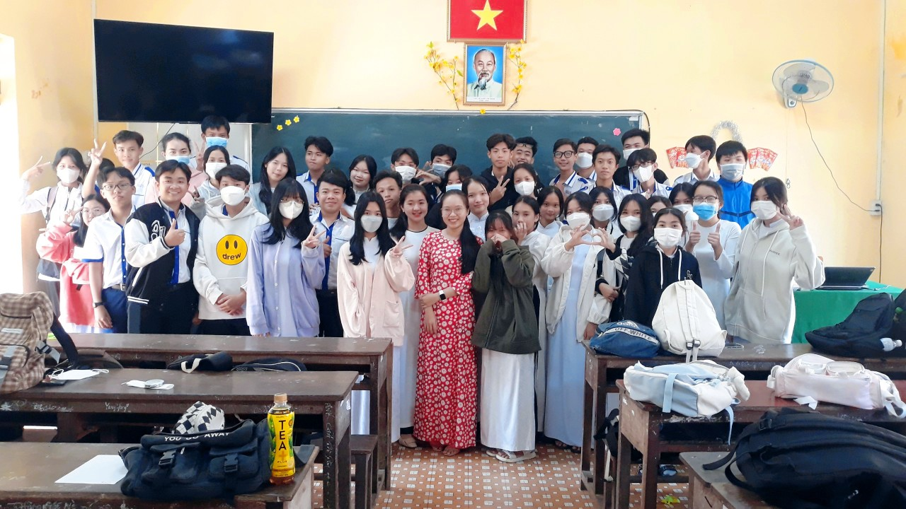

chao mung ngay 20 -11
chuc chi em tran ngap niem vui va hanh phuc
Ngày của Mẹ, của Cô, và của... Em
Tháng Mười về trong sắc vàng dịu dàng của nắng hanh hao, trong hương hoa sữa nồng nàn len lỏi khắp phố phường. Tháng Mười về cũng là lúc lòng ta thêm xốn xang hướng về ngày đặc biệt - ngày hai mươi tháng mười, ngày tôn vinh người Phụ nữ Việt Nam.
Ngày này cách đây gần một thế kỷ, từ trong khói lửa chiến tranh, Hội Phụ nữ phản đế Việt Nam ra đời, đánh dấu bước ngoặt quan trọng trong hành trình đấu tranh vì quyền bình đẳng cho người phụ nữ. Họ - những người mẹ, người chị - không chỉ là hậu phương vững chắc, mà còn trực tiếp cầm súng chiến đấu, góp phần làm nên chiến thắng vẻ vang cho dân tộc.
Ngày nay, trong thời bình, người phụ nữ Việt Nam vẫn tiếp tục phát huy truyền thống anh hùng, đảm đang. Họ vừa là người nội trợ đảm đang, vun vén cho hạnh phúc gia đình, vừa là những người lao động năng động, sáng tạo, cống hiến trên mọi lĩnh vực của đời sống xã hội. Từ giảng đường đại học đến những phòng thí nghiệm hiện đại, từ những cánh đồng lúa xanh mướt đến những công trường sôi động, đâu đâu cũng thấy bóng dáng của người phụ nữ, miệt mài, cần mẫn.
Tôi nhớ đến mẹ, người phụ nữ tảo tần sớm hôm, chắt chiu từng đồng để nuôi tôi ăn học. Mẹ là người thầy đầu tiên dạy tôi biết yêu thương, chia sẻ, là điểm tựa vững chắc mỗi khi tôi vấp ngã. Tôi nhớ đến cô giáo, người lái đò thầm lặng, tận tụy dìu dắt bao thế hệ học trò đến bến bờ tri thức. Cô là người thắp sáng ước mơ, khơi dậy trong tôi niềm đam mê học hỏi.
Nhưng ngày hai mươi tháng mười không chỉ là ngày của mẹ, của cô. Đó còn là ngày của em, của những người bạn gái xung quanh tôi. Tôi trân trọng sự mạnh mẽ, tự tin của những cô gái dám nghĩ dám làm, dám theo đuổi đam mê. Tôi yêu cái dịu dàng, tinh tế của những người bạn luôn biết quan tâm, chia sẻ.
Nhân ngày hai mươi tháng mười, xin gửi đến mẹ, đến cô, đến em, đến tất cả những người phụ nữ Việt Nam lời chúc tốt đẹp nhất. Chúc cho những đóa hoa xinh đẹp luôn rạng rỡ, hạnh phúc và thành công trong cuộc sống. Mong rằng, mỗi người phụ nữ sẽ luôn được yêu thương, trân trọng và có cơ hội phát huy hết khả năng của mình, góp phần xây dựng đất nước ngày càng giàu đẹp
 

.png)
binh luan
Nguồn:
THPT Huỳnh Hữu Nghĩa© 2024 Báo Tường Tổ 4 Lớp 12T3 THPT Huỳnh Hữu Nghĩa, Mọi Quyền Được Bảo Lưu.
Email: to412T3@gmail.com
Ngày cập nhật cuối: 11/11/2024
Trang web có sử dụng hình ảnh từ internet